Projects
-
Jellyquest (reborn!)
Links:
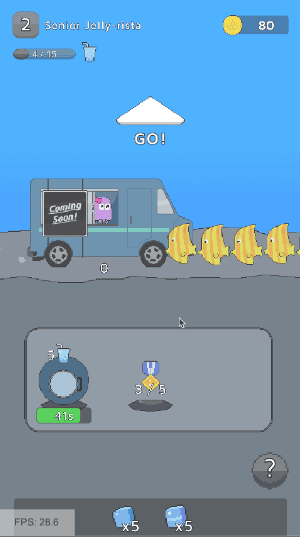 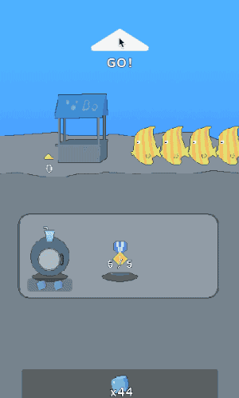 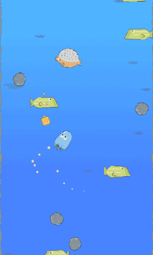
Devlog
Mobile arcade-y game with a meta-game twist made with Unity. Currently doing all game design, art, programming, etc. -
Finite Graph Machine
My attempt to build a Unity3D Editor Tool, inspired by the Animator.
- - Supports multiple active nodes
- - Complete separation of logic and editor
- - Full test-suite
Github Repository 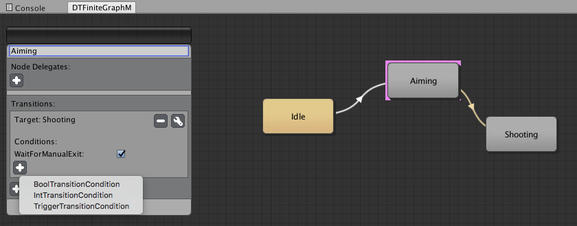 -
Dojo You Didn't!
Worked as programmer with artists Ted and Corey. 48-hour hackathon project for the Cartoon Network Game Jam competing for $48,000 in total prize money. Turn-based rhythm fighter.
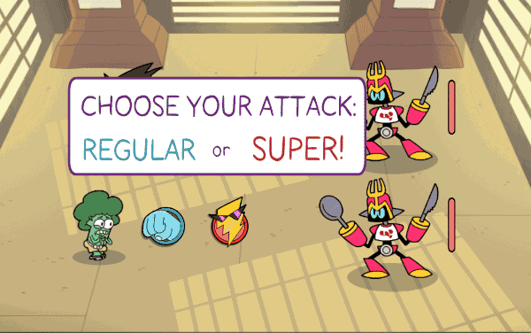 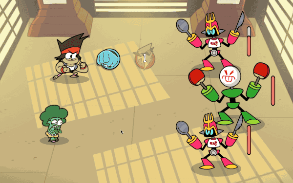
Placed in top 5 out of 40+ teams. -
Untitled Global Game Jam 2016 Project (VR)
48-hour Global Game Jam 2016 project. Play as a tribal musician and repeat the melody from the stars. Developed with Unity and an Oculus Rift DK2.

-
LAZERBEAK
24-hour hackathon project. 2-4 players play as minimalistic birds with lasers to fight to the last man standing. Voted audience choice.
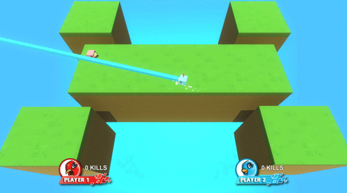 -
Cloudface
Worked as programmer with two artists (Ted and Corey) on a 2D Platformer with cloud-based abilities. Over 120,000+ views on tigsource forums.
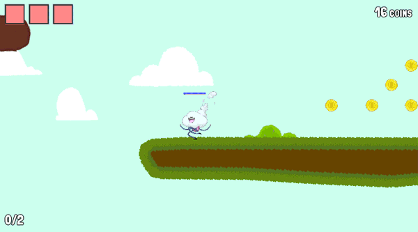 -
Low Poly Ocean
Perlin noise shader + voronoi mesh points.

-
Ascii Post Processing Effect
Post Processing Effect that reads in the rendered image, cuts it into tiles, and superimposes ascii images from a mapping based on the brightness of the tile.
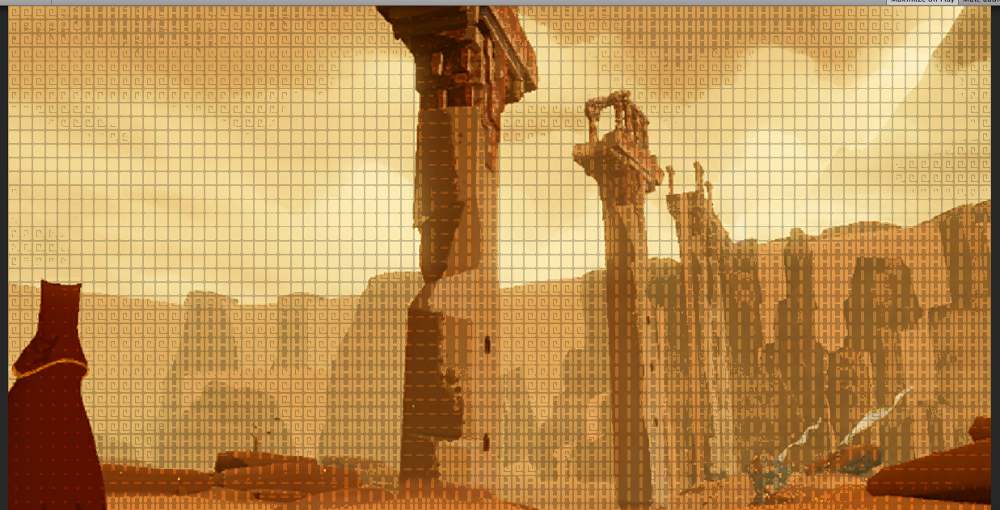 -
Burn Shader
Burn shader based on a dissolve map and burn ramp.
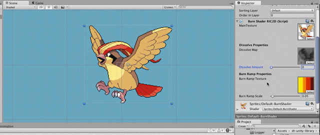 -
Duck Untitled Project
Untitled 2D Platformer. Built a complex loot system / database and editor in Unity.
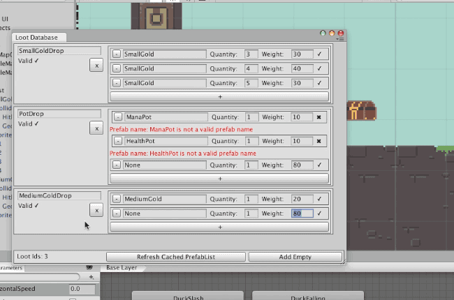 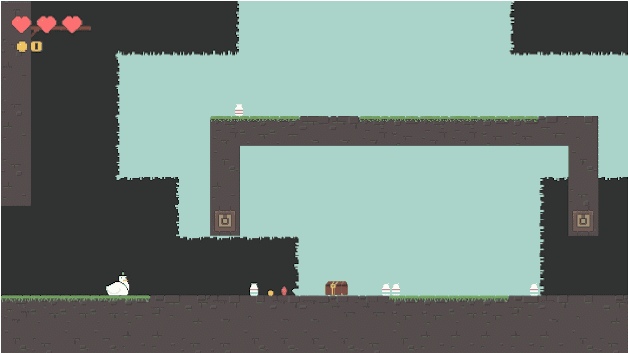 -
Hammer-Time
Developed with Unity for the Indies vs Gamers game jam. Play as a spaceship with a giant hammer and swing it around to destroy drones. Build up combos and try to beat your highest score!
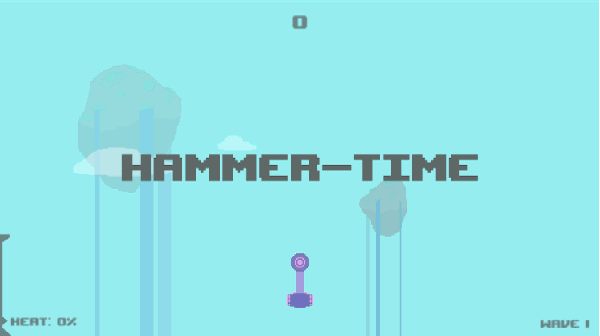 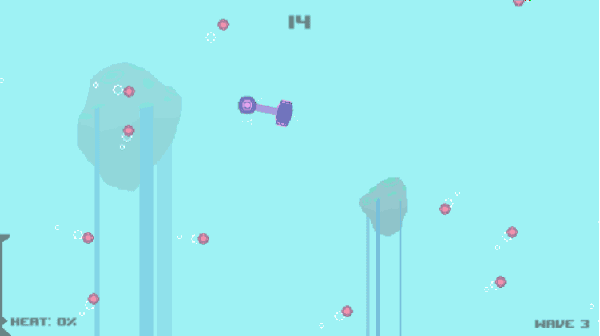 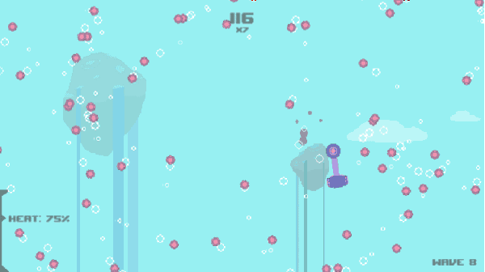 -
Swedish Redneck Adventure
Developed with Unity for the Epic Game Jam 2. Sneak up on a cow and try to tip it over, if it catches you moving then you lose!
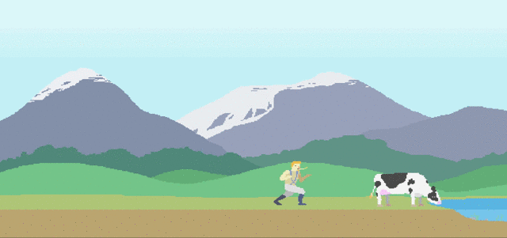 -
JellyQuest
An iOS action game built with Coconut (custom entity-component-system framework) and cocos2D-objc.
-
Coconut
An objective-c entity-component-system library designed for use with cocos2d-objc.
-
Takeover
Fast-paced iOS strategy game. Similar to tug of war. Won 2nd place in semester long game making competition.
-
WorkTime
iOS application that reads in a database of state and federal tax brackets to compute how much you make per hour. Visualizes how much time at work an item will cost you. Now on the app store!
-
Perlin Noise Generator with Sin-wave Vertex Shader
Experimentation into basic shader code. Applies a sin function on the height of each individual vertex of a Perlin Noise surface.
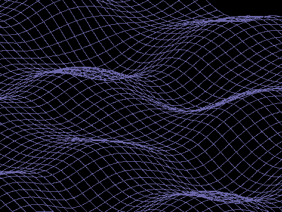 -
Wuff
Spontaneous event planning and invitation app. Developed over the course of the semester in a team of five.
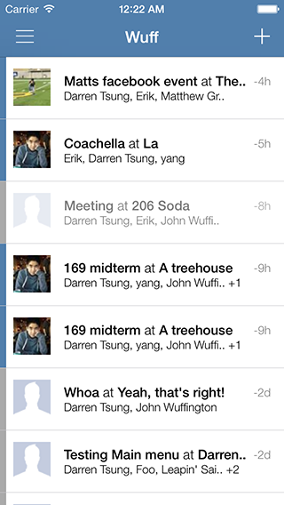 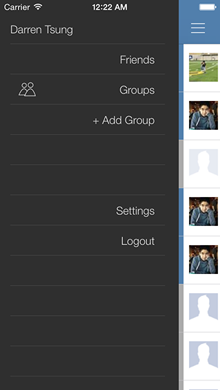 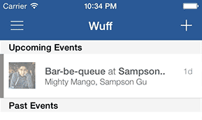 -
Breadcrumbs
Global Game Jam (GGJ2014) entry. Built in the span of two days with a team of four. 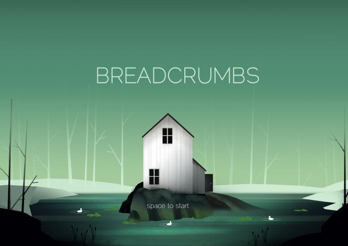
-
Raytracer
A raytracer implemented in C++. Does depth-of-field and texture modeling.
-
Inverse Kinematics (IK) Solver
Finds solutions that arrange 4+ arm segments to reach a target.
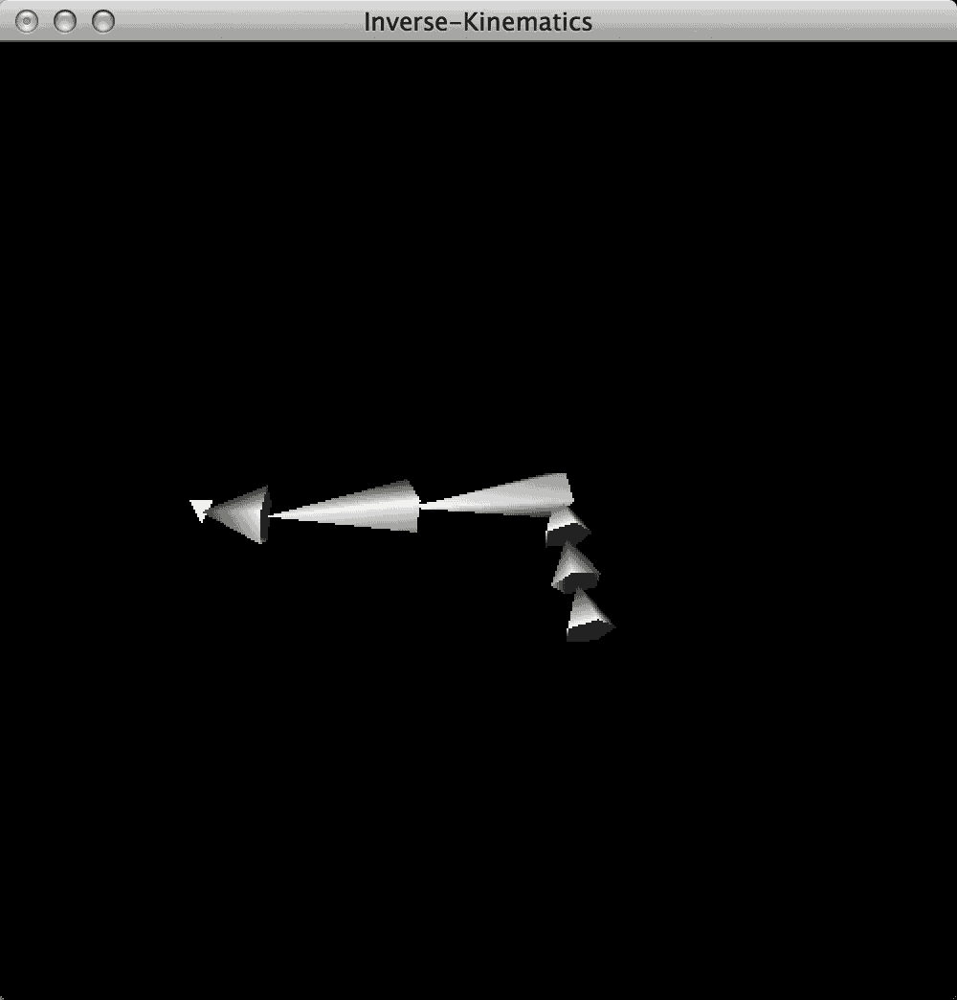 -
Adaptive and Uniform Tessellation on a Bezier Surface
Implementation of algorithms to split a curved surface into triangles for rendering.
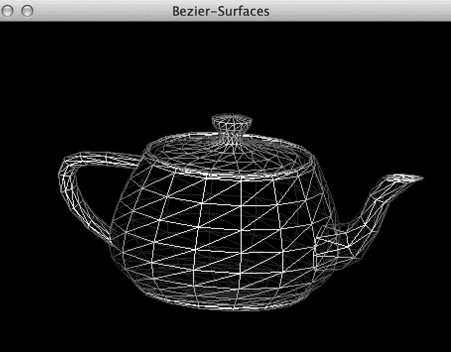